PASS exit 0
3d6c022e572e113cf02ae037e74e37f90491e941e4cfb8c9933869128cf6490e2b63a461ffab849bx6200-uiharness| Gate | Required | Status | Summary |
|---|---|---|---|
| Functional | yes | PASS | 64 scenarios captured on both revisions |
| Visual Regression | yes | PASS | no unexplained visual regressions |
| Quality Contract | yes | PASS | 663 contract checks passed on the candidate |
| Performance | yes | PASS | render-cost proxy within budget; 10 scenario(s) accepted by a dated exception |
| Hardware | advisory | BLOCKED | no physical X6200 attached; hardware behaviour is not measured |
| Energy | advisory | BLOCKED | no power measurement; energy evidence must be physical |
| Scenario | flushes Δ | flushed_pixels Δ | Verdict | Expires |
|---|---|---|---|---|
| settings-audio | +114.3% | +11.7% | PASS (by exception) | 2027-03-31 |
| settings-home | +114.3% | +11.7% | PASS (by exception) | 2027-03-31 |
| settings-perfil | +133.3% | +13.2% | PASS (by exception) | 2027-03-31 |
| settings-tema-aurora | +133.3% | +13.2% | PASS (by exception) | 2027-03-31 |
| settings-tema-cathode | +133.3% | +13.2% | PASS (by exception) | 2027-03-31 |
| settings-tema-redshift | +133.3% | +13.2% | PASS (by exception) | 2027-03-31 |
| settings-tema-sprint | +133.3% | +13.2% | PASS (by exception) | 2027-03-31 |
| settings-tema-sunlit | +133.3% | +13.2% | PASS (by exception) | 2027-03-31 |
| settings-tema-trail | +133.3% | +13.2% | PASS (by exception) | 2027-03-31 |
| settings-wfbat | +114.3% | +11.7% | PASS (by exception) | 2027-03-31 |
settings-audio accepted by ajustes-tabs-109 until 2027-03-31: AB-SETEN109 (#109): reordering the Settings tabs moved the dialog's initial focus from the Clock tab's date spinbox to Operation, whose first focusable widget is the "Freq acceleration" dropdown (make_freq_accel, src/dialog_settings.c). LVGL animates the focus style change with the theme's default transition — 80 ms, LV_THEME_DEFAULT_TRANSITION_TIME in lv_conf.h — so the first open of the window costs a constant +8 flushes and +132610 flushed pixels on every fixture that renders it, whatever the navigation. The steady state is unchanged (the CI benchmark measures flushes_mean 1.0 -> 1.0 and redrawn_area_mean 384000 -> 384000 on the same fixtures), so this is a one-off cost at open, not an operating regression. Measured here: 7 -> 15 flushes (+114.3%) and 1135170 -> 1267780 flushed pixels (+11.7%). Accepted by the owner on 2026-10-16 (issue #109), with budgets.yaml untouched.
settings-home accepted by ajustes-tabs-109 until 2027-03-31: AB-SETEN109 (#109): reordering the Settings tabs moved the dialog's initial focus from the Clock tab's date spinbox to Operation, whose first focusable widget is the "Freq acceleration" dropdown (make_freq_accel, src/dialog_settings.c). LVGL animates the focus style change with the theme's default transition — 80 ms, LV_THEME_DEFAULT_TRANSITION_TIME in lv_conf.h — so the first open of the window costs a constant +8 flushes and +132610 flushed pixels on every fixture that renders it, whatever the navigation. The steady state is unchanged (the CI benchmark measures flushes_mean 1.0 -> 1.0 and redrawn_area_mean 384000 -> 384000 on the same fixtures), so this is a one-off cost at open, not an operating regression. Measured here: 7 -> 15 flushes (+114.3%) and 1135170 -> 1267780 flushed pixels (+11.7%). Accepted by the owner on 2026-10-16 (issue #109), with budgets.yaml untouched.
settings-perfil accepted by ajustes-tabs-109 until 2027-03-31: AB-SETEN109 (#109): the same initial-focus change as the sibling entry above (the Settings dialog opens on Operation, whose first widget is the "Freq acceleration" dropdown, animated by LVGL's 80 ms theme transition), measured on the fixtures whose base is 6 flushes: the profile window and the six theme fixtures. The delta is the same constant +8 flushes and +132610 flushed pixels, and the steady state is unchanged (the CI benchmark measures flushes_mean 1.0 -> 1.0 and redrawn_area_mean 384000 -> 384000), so it is a one-off cost at open. Measured here: 6 -> 14 flushes (+133.3%) and 1003170 -> 1135780 flushed pixels (+13.2%). Accepted by the owner on 2026-10-16 (issue #109), with budgets.yaml untouched.
settings-tema-aurora accepted by ajustes-tabs-109 until 2027-03-31: AB-SETEN109 (#109): the same initial-focus change as the sibling entry above (the Settings dialog opens on Operation, whose first widget is the "Freq acceleration" dropdown, animated by LVGL's 80 ms theme transition), measured on the fixtures whose base is 6 flushes: the profile window and the six theme fixtures. The delta is the same constant +8 flushes and +132610 flushed pixels, and the steady state is unchanged (the CI benchmark measures flushes_mean 1.0 -> 1.0 and redrawn_area_mean 384000 -> 384000), so it is a one-off cost at open. Measured here: 6 -> 14 flushes (+133.3%) and 1003170 -> 1135780 flushed pixels (+13.2%). Accepted by the owner on 2026-10-16 (issue #109), with budgets.yaml untouched.
settings-tema-cathode accepted by ajustes-tabs-109 until 2027-03-31: AB-SETEN109 (#109): the same initial-focus change as the sibling entry above (the Settings dialog opens on Operation, whose first widget is the "Freq acceleration" dropdown, animated by LVGL's 80 ms theme transition), measured on the fixtures whose base is 6 flushes: the profile window and the six theme fixtures. The delta is the same constant +8 flushes and +132610 flushed pixels, and the steady state is unchanged (the CI benchmark measures flushes_mean 1.0 -> 1.0 and redrawn_area_mean 384000 -> 384000), so it is a one-off cost at open. Measured here: 6 -> 14 flushes (+133.3%) and 1003170 -> 1135780 flushed pixels (+13.2%). Accepted by the owner on 2026-10-16 (issue #109), with budgets.yaml untouched.
settings-tema-redshift accepted by ajustes-tabs-109 until 2027-03-31: AB-SETEN109 (#109): the same initial-focus change as the sibling entry above (the Settings dialog opens on Operation, whose first widget is the "Freq acceleration" dropdown, animated by LVGL's 80 ms theme transition), measured on the fixtures whose base is 6 flushes: the profile window and the six theme fixtures. The delta is the same constant +8 flushes and +132610 flushed pixels, and the steady state is unchanged (the CI benchmark measures flushes_mean 1.0 -> 1.0 and redrawn_area_mean 384000 -> 384000), so it is a one-off cost at open. Measured here: 6 -> 14 flushes (+133.3%) and 1003170 -> 1135780 flushed pixels (+13.2%). Accepted by the owner on 2026-10-16 (issue #109), with budgets.yaml untouched.
settings-tema-sprint accepted by ajustes-tabs-109 until 2027-03-31: AB-SETEN109 (#109): the same initial-focus change as the sibling entry above (the Settings dialog opens on Operation, whose first widget is the "Freq acceleration" dropdown, animated by LVGL's 80 ms theme transition), measured on the fixtures whose base is 6 flushes: the profile window and the six theme fixtures. The delta is the same constant +8 flushes and +132610 flushed pixels, and the steady state is unchanged (the CI benchmark measures flushes_mean 1.0 -> 1.0 and redrawn_area_mean 384000 -> 384000), so it is a one-off cost at open. Measured here: 6 -> 14 flushes (+133.3%) and 1003170 -> 1135780 flushed pixels (+13.2%). Accepted by the owner on 2026-10-16 (issue #109), with budgets.yaml untouched.
settings-tema-sunlit accepted by ajustes-tabs-109 until 2027-03-31: AB-SETEN109 (#109): the same initial-focus change as the sibling entry above (the Settings dialog opens on Operation, whose first widget is the "Freq acceleration" dropdown, animated by LVGL's 80 ms theme transition), measured on the fixtures whose base is 6 flushes: the profile window and the six theme fixtures. The delta is the same constant +8 flushes and +132610 flushed pixels, and the steady state is unchanged (the CI benchmark measures flushes_mean 1.0 -> 1.0 and redrawn_area_mean 384000 -> 384000), so it is a one-off cost at open. Measured here: 6 -> 14 flushes (+133.3%) and 1003170 -> 1135780 flushed pixels (+13.2%). Accepted by the owner on 2026-10-16 (issue #109), with budgets.yaml untouched.
settings-tema-trail accepted by ajustes-tabs-109 until 2027-03-31: AB-SETEN109 (#109): the same initial-focus change as the sibling entry above (the Settings dialog opens on Operation, whose first widget is the "Freq acceleration" dropdown, animated by LVGL's 80 ms theme transition), measured on the fixtures whose base is 6 flushes: the profile window and the six theme fixtures. The delta is the same constant +8 flushes and +132610 flushed pixels, and the steady state is unchanged (the CI benchmark measures flushes_mean 1.0 -> 1.0 and redrawn_area_mean 384000 -> 384000), so it is a one-off cost at open. Measured here: 6 -> 14 flushes (+133.3%) and 1003170 -> 1135780 flushed pixels (+13.2%). Accepted by the owner on 2026-10-16 (issue #109), with budgets.yaml untouched.
settings-wfbat accepted by ajustes-tabs-109 until 2027-03-31: AB-SETEN109 (#109): reordering the Settings tabs moved the dialog's initial focus from the Clock tab's date spinbox to Operation, whose first focusable widget is the "Freq acceleration" dropdown (make_freq_accel, src/dialog_settings.c). LVGL animates the focus style change with the theme's default transition — 80 ms, LV_THEME_DEFAULT_TRANSITION_TIME in lv_conf.h — so the first open of the window costs a constant +8 flushes and +132610 flushed pixels on every fixture that renders it, whatever the navigation. The steady state is unchanged (the CI benchmark measures flushes_mean 1.0 -> 1.0 and redrawn_area_mean 384000 -> 384000 on the same fixtures), so this is a one-off cost at open, not an operating regression. Measured here: 7 -> 15 flushes (+114.3%) and 1135170 -> 1267780 flushed pixels (+11.7%). Accepted by the owner on 2026-10-16 (issue #109), with budgets.yaml untouched.
| Scenario | Changed px | Area | Regions |
|---|---|---|---|
| app-bands | 0 | 0.000% | — |
| app-close-home | 0 | 0.000% | — |
| apps-menu-1 | 0 | 0.000% | — |
| apps-menu-2 | 0 | 0.000% | — |
| apps-menu-3 | 0 | 0.000% | — |
| apps-menu-4 | 0 | 0.000% | — |
| apps-menu-5 | 0 | 0.000% | — |
| apps-menu-6 | 0 | 0.000% | — |
| autotune | 0 | 0.000% | — |
| autotune-found | 0 | 0.000% | — |
| autotune-progress | 0 | 0.000% | — |
| bench-render | 0 | 0.000% | — |
| bt-dialog | 0 | 0.000% | — |
| bt-dialog-tema-aurora | 0 | 0.000% | — |
| bt-dialog-tema-cathode | 0 | 0.000% | — |
| bt-dialog-tema-redshift | 0 | 0.000% | — |
| bt-dialog-tema-sprint | 0 | 0.000% | — |
| bt-dialog-tema-sunlit | 0 | 0.000% | — |
| bt-dialog-tema-trail | 0 | 0.000% | — |
| home-bateria-externa | 0 | 0.000% | — |
| home-frecuencia-extrema | 0 | 0.000% | — |
| home-usb-20m | 0 | 0.000% | — |
| main-bateria-baja | 0 | 0.000% | — |
| main-espectro-agua | 0 | 0.000% | — |
| main-foco | 0 | 0.000% | — |
| main-frecuencia-dseg | 0 | 0.000% | — |
| main-natural | 0 | 0.000% | — |
| main-natural-eco | 0 | 0.000% | — |
| main-tema-aurora | 0 | 0.000% | — |
| main-tema-aurora-agua | 0 | 0.000% | — |
| main-tema-aurora-eco | 0 | 0.000% | — |
| main-tema-aurora-tx | 0 | 0.000% | — |
| main-tema-cathode | 0 | 0.000% | — |
| main-tema-cathode-agua | 0 | 0.000% | — |
| main-tema-cathode-eco | 0 | 0.000% | — |
| main-tema-cathode-tx | 0 | 0.000% | — |
| main-tema-redshift | 0 | 0.000% | — |
| main-tema-redshift-agua | 0 | 0.000% | — |
| main-tema-redshift-eco | 0 | 0.000% | — |
| main-tema-redshift-tx | 0 | 0.000% | — |
| main-tema-sprint | 0 | 0.000% | — |
| main-tema-sprint-agua | 0 | 0.000% | — |
| main-tema-sprint-eco | 0 | 0.000% | — |
| main-tema-sprint-tx | 0 | 0.000% | — |
| main-tema-sunlit | 0 | 0.000% | — |
| main-tema-sunlit-agua | 0 | 0.000% | — |
| main-tema-sunlit-eco | 0 | 0.000% | — |
| main-tema-sunlit-tx | 0 | 0.000% | — |
| main-tema-trail | 0 | 0.000% | — |
| main-tema-trail-agua | 0 | 0.000% | — |
| main-tema-trail-eco | 0 | 0.000% | — |
| main-tema-trail-tx | 0 | 0.000% | — |
| main-tx-simulado | 0 | 0.000% | — |
| settings-audio | 21589 | 5.622% | espectro, frecuencia, botones, ajustes_anio, ajustes_scrollbar, ajustes_dialogo |
| settings-bands | 0 | 0.000% | — |
| settings-home | 64387 | 16.767% | espectro, frecuencia, waterfall, botones, ajustes_anio, ajustes_perfil, ajustes_scrollbar, ajustes_audio_ganancia, ajustes_tema, ajustes_dialogo |
| settings-perfil | 21688 | 5.648% | waterfall, botones, ajustes_scrollbar, ajustes_dialogo |
| settings-tema-aurora | 21688 | 5.648% | waterfall, botones, ajustes_scrollbar, ajustes_dialogo |
| settings-tema-cathode | 21899 | 5.703% | waterfall, botones, ajustes_scrollbar, ajustes_dialogo |
| settings-tema-redshift | 20949 | 5.455% | waterfall, botones, ajustes_scrollbar, ajustes_dialogo |
| settings-tema-sprint | 21438 | 5.583% | waterfall, botones, ajustes_scrollbar, ajustes_dialogo |
| settings-tema-sunlit | 22126 | 5.762% | waterfall, botones, ajustes_scrollbar, ajustes_dialogo |
| settings-tema-trail | 21896 | 5.702% | waterfall, botones, ajustes_scrollbar, ajustes_dialogo |
| settings-wfbat | 21790 | 5.674% | waterfall, botones, ajustes_scrollbar, ajustes_dialogo |
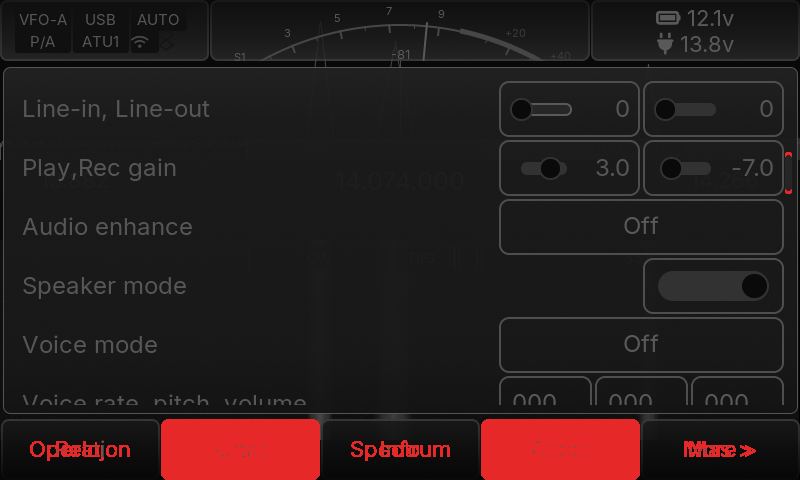
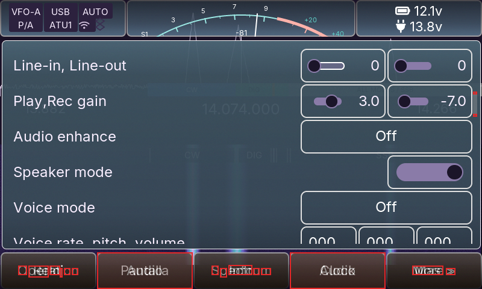
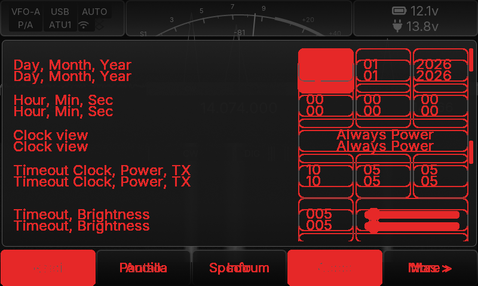
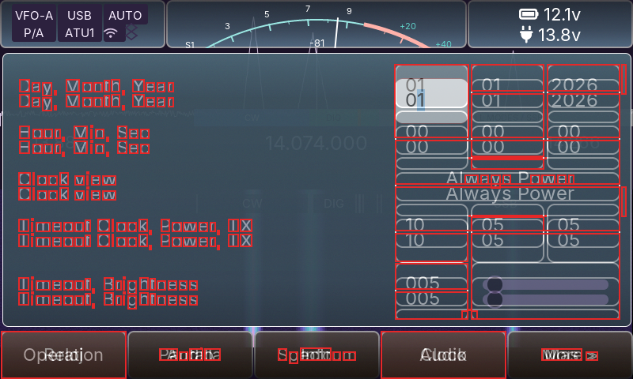


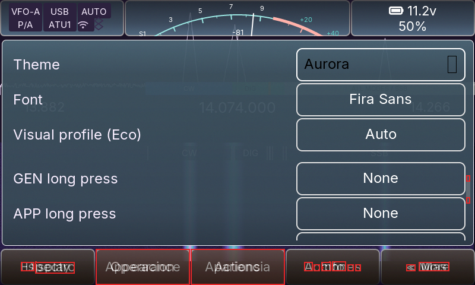
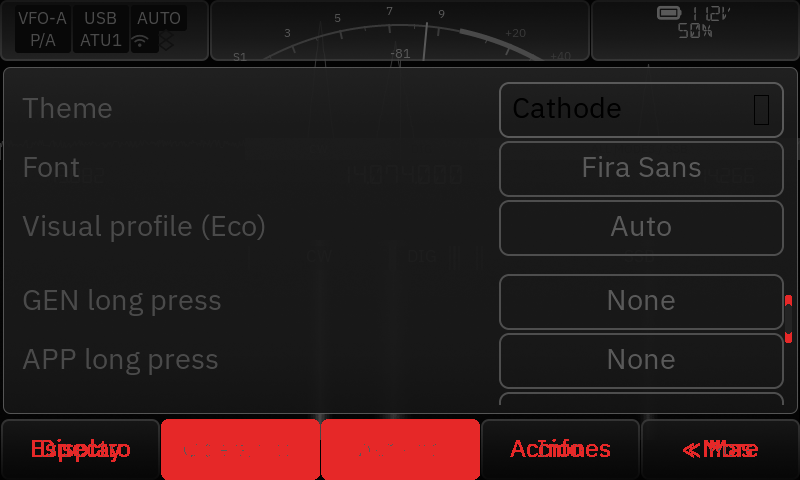
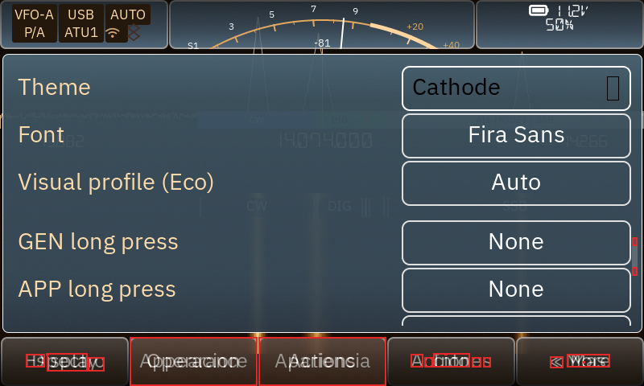
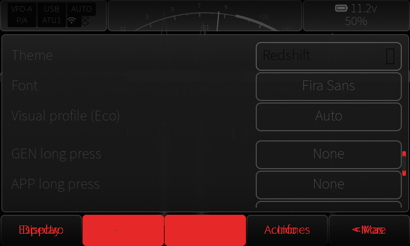
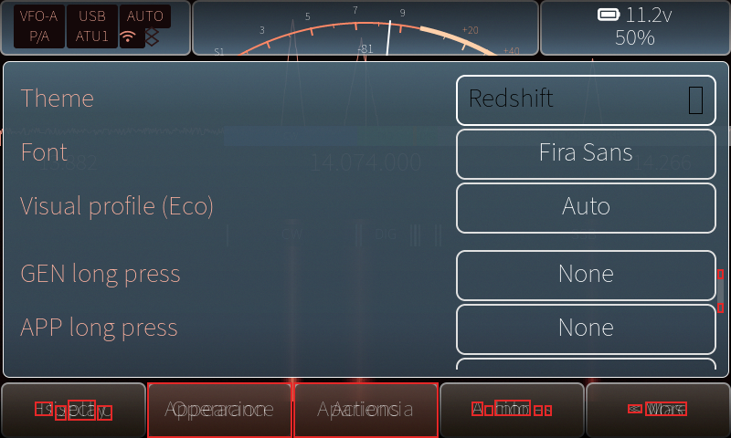
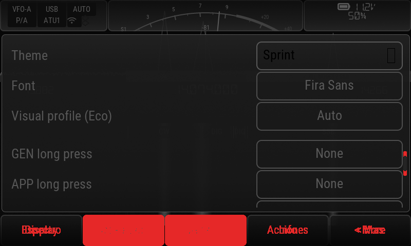
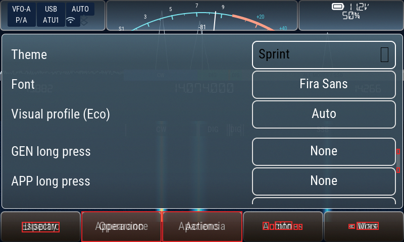
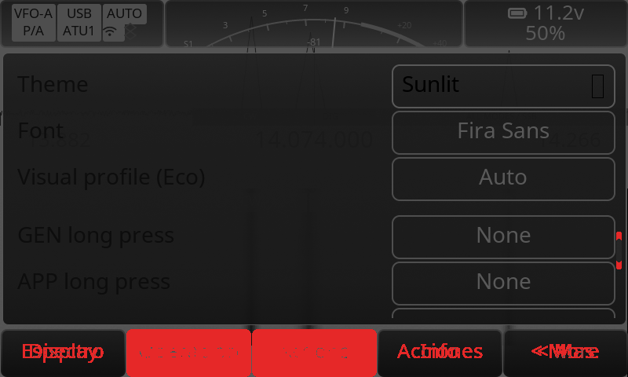
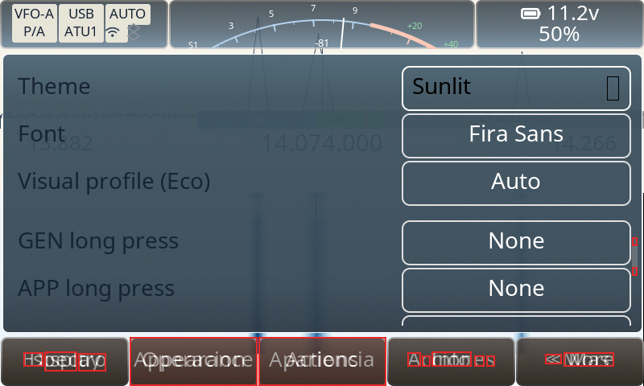
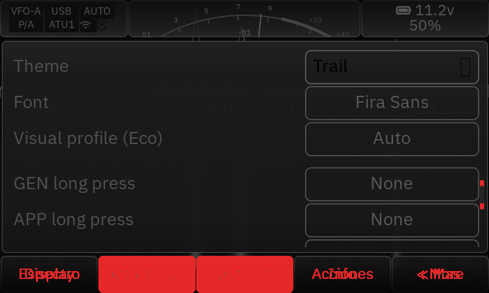
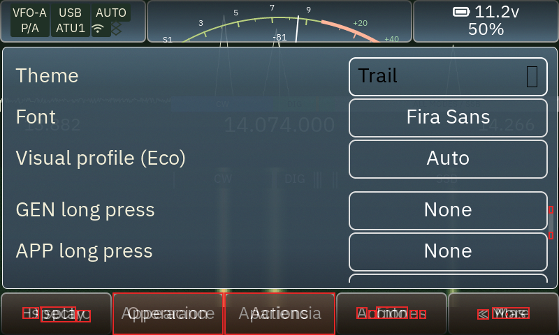
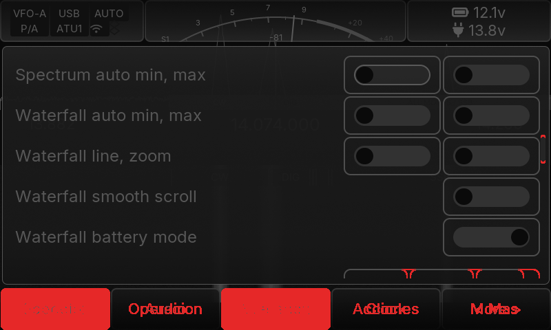
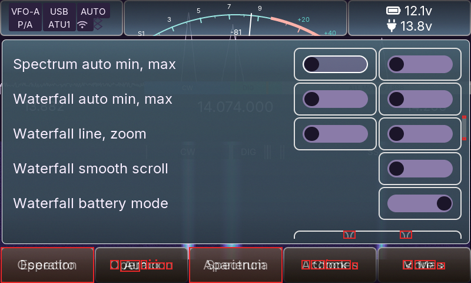
| Scenario | REAL | PARTIAL | SYNTHETIC | UNSUPPORTED |
|---|---|---|---|---|
| app-bands | 16 | 5 | 3 | 5 |
| app-close-home | 17 | 5 | 4 | 3 |
| apps-menu-1 | 16 | 5 | 3 | 3 |
| apps-menu-2 | 16 | 5 | 3 | 3 |
| apps-menu-3 | 16 | 5 | 3 | 3 |
| apps-menu-4 | 16 | 5 | 3 | 3 |
| apps-menu-5 | 16 | 5 | 3 | 3 |
| apps-menu-6 | 16 | 5 | 3 | 3 |
| autotune | 18 | 5 | 3 | 5 |
| autotune-found | 18 | 5 | 3 | 5 |
| autotune-progress | 18 | 5 | 3 | 5 |
| bench-render | 15 | 4 | 3 | 3 |
| bt-dialog | 19 | 4 | 4 | 4 |
| bt-dialog-tema-aurora | 19 | 4 | 4 | 4 |
| bt-dialog-tema-cathode | 19 | 4 | 4 | 4 |
| bt-dialog-tema-redshift | 19 | 4 | 4 | 4 |
| bt-dialog-tema-sprint | 19 | 4 | 4 | 4 |
| bt-dialog-tema-sunlit | 19 | 4 | 4 | 4 |
| bt-dialog-tema-trail | 19 | 4 | 4 | 4 |
| home-bateria-externa | 15 | 4 | 3 | 3 |
| home-frecuencia-extrema | 15 | 4 | 3 | 3 |
| home-usb-20m | 15 | 4 | 3 | 3 |
| main-bateria-baja | 15 | 4 | 3 | 3 |
| main-espectro-agua | 15 | 4 | 3 | 3 |
| main-foco | 15 | 4 | 3 | 3 |
| main-frecuencia-dseg | 15 | 4 | 3 | 3 |
| main-natural | 15 | 4 | 3 | 3 |
| main-natural-eco | 15 | 4 | 3 | 3 |
| main-tema-aurora | 15 | 4 | 3 | 3 |
| main-tema-aurora-agua | 15 | 4 | 3 | 3 |
| main-tema-aurora-eco | 15 | 4 | 3 | 3 |
| main-tema-aurora-tx | 15 | 4 | 3 | 3 |
| main-tema-cathode | 15 | 4 | 3 | 3 |
| main-tema-cathode-agua | 15 | 4 | 3 | 3 |
| main-tema-cathode-eco | 15 | 4 | 3 | 3 |
| main-tema-cathode-tx | 15 | 4 | 3 | 3 |
| main-tema-redshift | 15 | 4 | 3 | 3 |
| main-tema-redshift-agua | 15 | 4 | 3 | 3 |
| main-tema-redshift-eco | 15 | 4 | 3 | 3 |
| main-tema-redshift-tx | 15 | 4 | 3 | 3 |
| main-tema-sprint | 15 | 4 | 3 | 3 |
| main-tema-sprint-agua | 15 | 4 | 3 | 3 |
| main-tema-sprint-eco | 15 | 4 | 3 | 3 |
| main-tema-sprint-tx | 15 | 4 | 3 | 3 |
| main-tema-sunlit | 15 | 4 | 3 | 3 |
| main-tema-sunlit-agua | 15 | 4 | 3 | 3 |
| main-tema-sunlit-eco | 15 | 4 | 3 | 3 |
| main-tema-sunlit-tx | 15 | 4 | 3 | 3 |
| main-tema-trail | 15 | 4 | 3 | 3 |
| main-tema-trail-agua | 15 | 4 | 3 | 3 |
| main-tema-trail-eco | 15 | 4 | 3 | 3 |
| main-tema-trail-tx | 15 | 4 | 3 | 3 |
| main-tx-simulado | 15 | 4 | 3 | 3 |
| settings-audio | 17 | 4 | 10 | 4 |
| settings-bands | 17 | 5 | 3 | 5 |
| settings-home | 17 | 4 | 10 | 4 |
| settings-perfil | 17 | 4 | 10 | 4 |
| settings-tema-aurora | 17 | 4 | 10 | 4 |
| settings-tema-cathode | 17 | 4 | 10 | 4 |
| settings-tema-redshift | 17 | 4 | 10 | 4 |
| settings-tema-sprint | 17 | 4 | 10 | 4 |
| settings-tema-sunlit | 17 | 4 | 10 | 4 |
| settings-tema-trail | 17 | 4 | 10 | 4 |
| settings-wfbat | 17 | 4 | 10 | 4 |
| Issue | Fixture | A | B | Classification |
|---|---|---|---|---|
| UI-001 | home-usb-20m | no | no | NOT_REPRODUCED |
| UI-009 | home-bateria-externa | no | no | NOT_REPRODUCED |
| UI-015 | settings-wfbat | — | — | UNVERIFIED |
| UI-016 | settings-home | — | — | UNVERIFIED |
| UI-017 | main-frecuencia-dseg | — | — | UNVERIFIED |
| UI-002 | apps-menu-1 | — | — | UNVERIFIED |
| UI-003 | home-usb-20m | — | — | UNVERIFIED |
| UI-004 | settings-home | — | — | UNVERIFIED |
| UI-005 | bt-dialog | — | — | UNVERIFIED |
| UI-006 | home-usb-20m | — | — | UNVERIFIED |
| UI-008 | home-usb-20m | — | — | UNVERIFIED |
663 checks, 0 failure(s), 0 unchanged baseline defect(s).